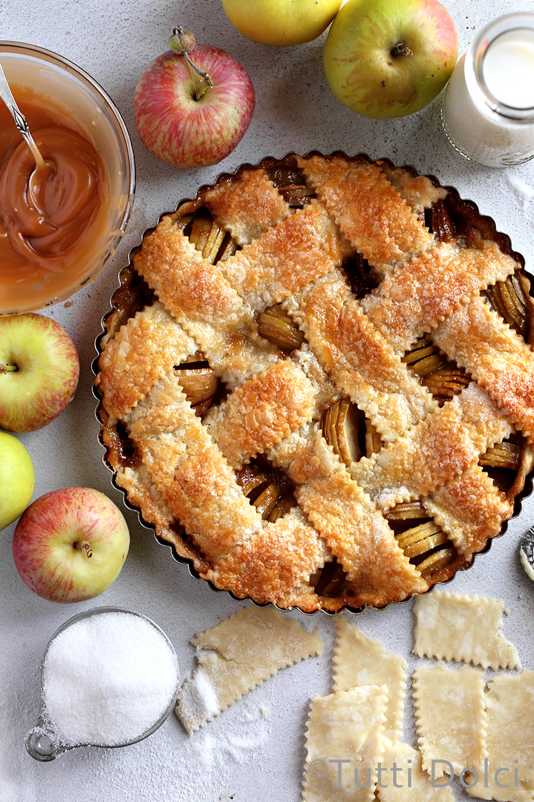

Apple Tart

Description
A delicious apple tart to serve on every occassion
Ingredients
- A tart shell, like a sablee crust
- 6 big apples
- 1 tbsp cinammon
- 100g brown sugar
- Juice from 1 lemon
- Apple cinammon jam
- Crushed nuts or almonds
Steps
- Preheat the oven at 180°C
- Peel and remove the core from the apples.
- Cut the apples into equal-sized chunks
- In a bowl, quickly mix the apples and juice
- Add both the sugar and cinammon and continue to mix until combined
- Transfer the mixture to a pan, adding a small dash of water and cook for a few minutes to allow the sugar to dissolve and caramelise
- Transfer the mixture to the shell
- Mix in some apple and cinammon jam with the nuts and almonds
- Bake for 10 minutes to allow the flavours to fully combine.
- Remove from the oven and allow it cool overnight
- You can choose to warm it up in the oven before serving, adding some vanilla icecream and cream